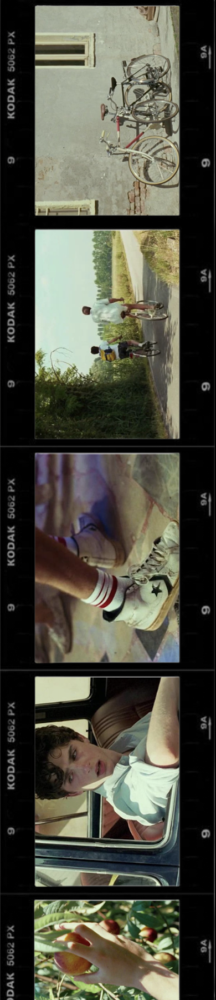

|
 |
The film Call Me by Your Name, released in 2017 and directed by Luca Guadagnino, is widely considered the definitive turning point in Timothée Chalamet’s career. Based on the celebrated novel by André Aciman, the story is set in the sun-drenched landscape of northern Italy during the summer of 1983. Chalamet portrays Elio Perlman, a precocious 17-year-old Jewish-Italian boy who spends his days transcribing music and reading until he meets Oliver, a 24-year-old American graduate student staying with Elio’s family. The narrative beautifully captures the intensity of first love and the bittersweet nature of a fleeting summer romance that ultimately shapes Elio’s transition into adulthood. ARTISTIC PERFORMANCE AND PREPARATION For his portrayal of Elio, Chalamet received universal critical acclaim, with many reviewers highlighting his ability to convey deep emotional complexity with minimal dialogue. One of the most famous examples of his talent is the film's final scene, a long, unbroken shot of Elio staring into a fireplace as he processes his heartbreak, which has since become a legendary moment in modern cinema. To prepare for the role, Chalamet fully immersed himself in the character by learning to speak Italian and refining his skills on both the piano and the guitar, showcasing a level of dedication that set him apart from his peers. "Is it better to speak or to die?" CRITICAL RECOGNITION AND CAREER IMPACT The impact of this performance on his professional trajectory was monumental, as it earned him his first Academy Award nomination for Best Actor. At the age of 22, he became the third-youngest nominee in that category’s history and the youngest since 1939. Beyond the Oscars, he won numerous other accolades, including the Gotham Independent Film Award for Breakthrough Actor and the Independent Spirit Award for Best Male Lead. This role did more than just win him awards; it established him as the "face" of a new generation of actors and provided him with the "confidence to just be" on screen, a philosophy he has carried into his later blockbuster roles. |